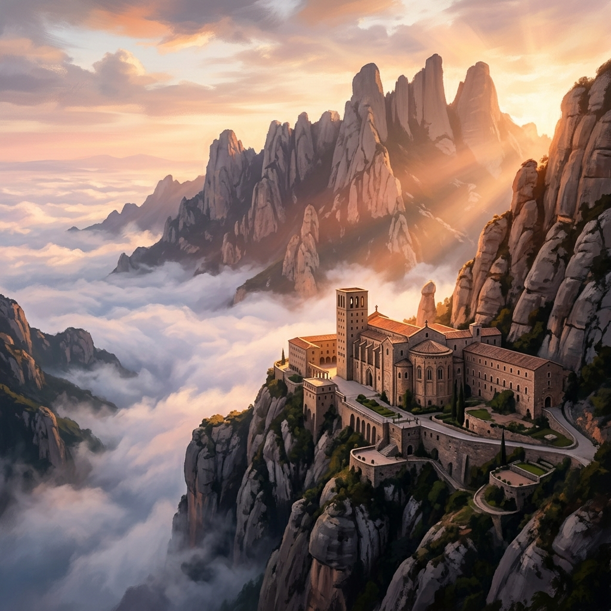
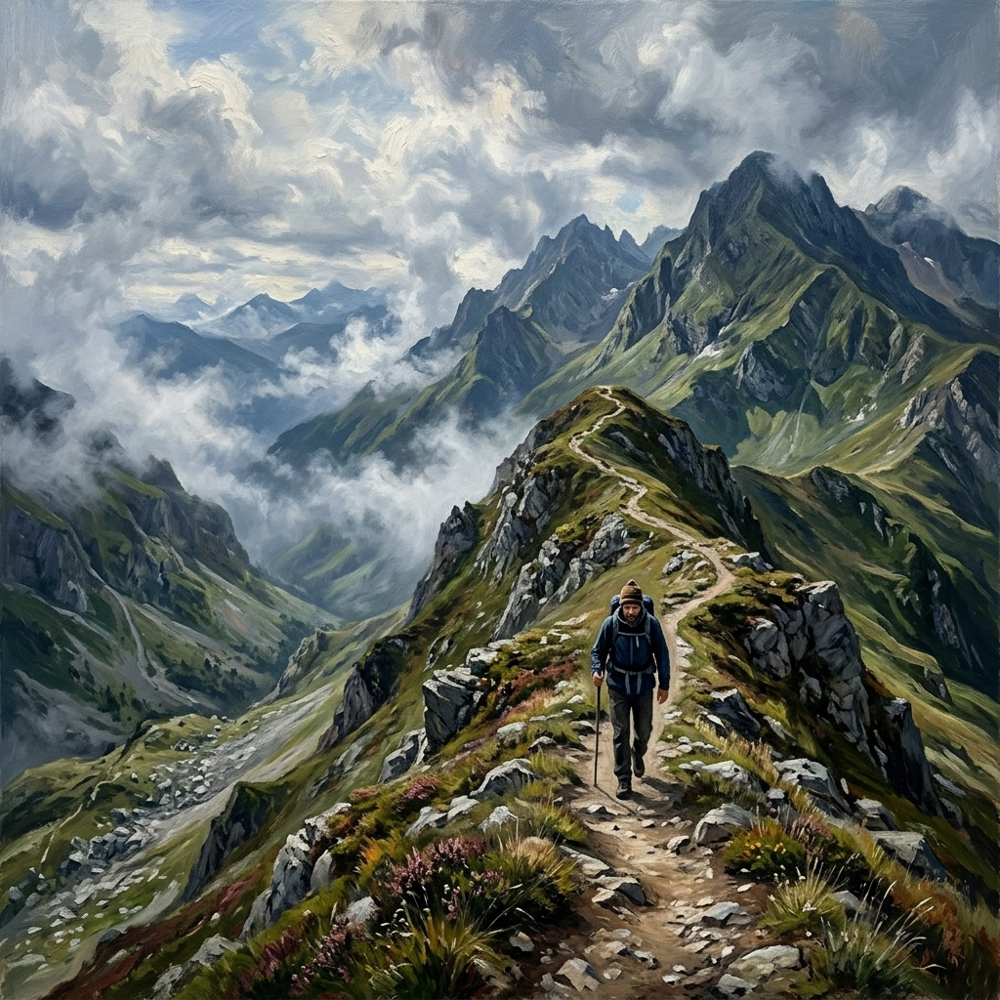
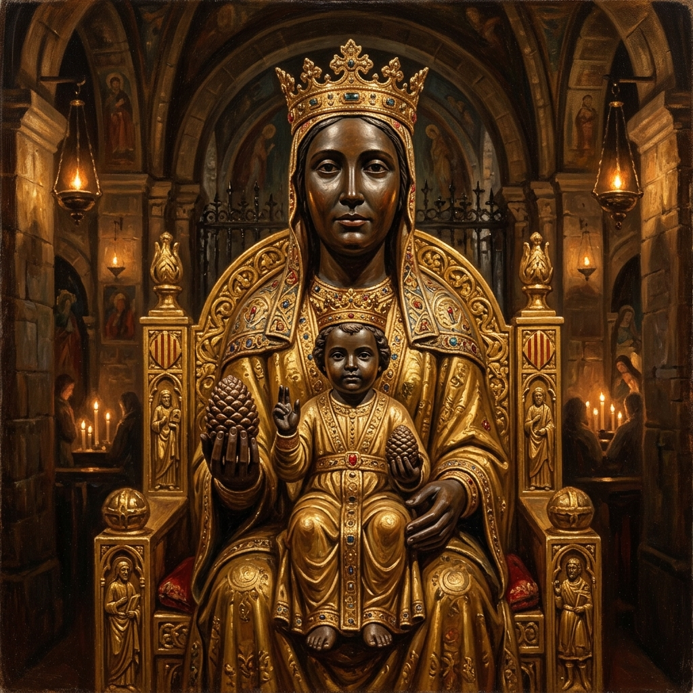
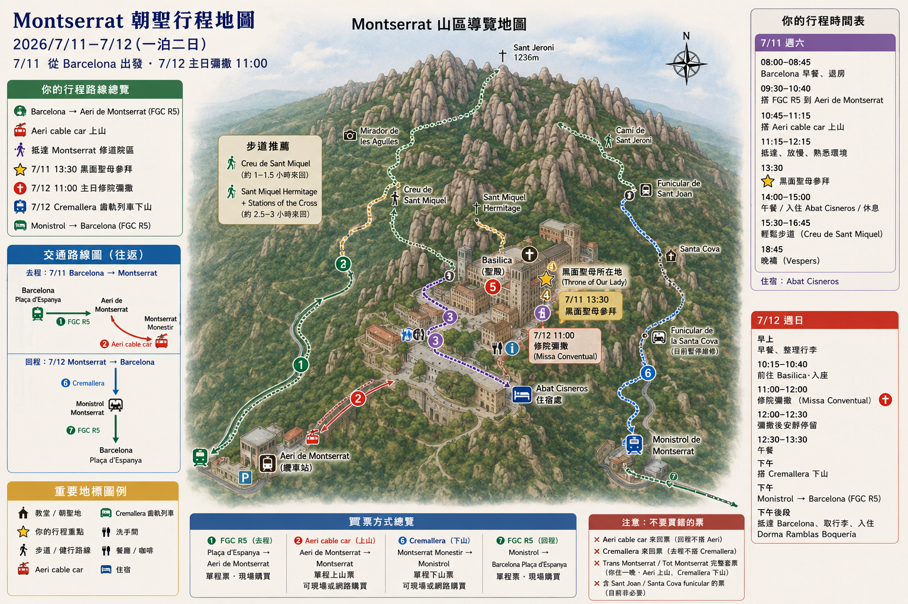

蒙 塞 拉 特 Montserrat
我在山中學習安靜、交託與站穩
「我上山，不只是為了風景，
而是為了把心帶到更安靜、更高的地方。」
大山，是不說話的聖殿
Montserrat 對於你來說，不是巴塞隆納近郊拍照打卡的一日遊行程，而是一場重要的「山中朝聖站」。如果你先在露德（Lourdes）觸摸了岩洞的泉水、在脆弱與眼淚中得到聖母溫柔的撫慰；接著在巴塞隆納看見高第如何將人的信德建成巨石與彩光；那麼在蒙塞拉特，你要把身體帶進山中，用每一步前進，讓信仰變成踏實的腳步、沈默與凝望。
這裡由獨特的硬礫岩與沉積物經過千萬年風雨侵蝕，塑造出無數宛如手指、守護者般高聳矗立的針狀石峰。本篤會修道院在此佇立千年，修士們以祈禱、沈默與工作，守護著這片自然聖殿中永恆的時間節奏。
「露德教導我：我可以在脆弱中被看見。
蒙塞拉特教導我：我可以在山上重新站穩。」
鋸齒奇山
這座山不是背景，它本身就是朝聖的一部分

Montserrat 在加泰隆尼亞語中，字面意思就是「鋸齒狀的山」。它不像一般連綿起伏、平順柔和的青翠山體，而是由一根根、一柱一柱硬礫岩垂直站立組成的奇異地貌。
站在修道院廣場或漫步山路上，你會強烈感覺到：不是人類在這座山頂上建立了一座壯麗的聖所，而是大山本身早已是一座由上天設計、大自然塑造的巨大天然聖殿。在這裡，修道院很小，山很大；人類的建築並非要在這裡宣示支配，而是謙卑地嵌在大山的懷抱中，在大自然的沉默裡尋找天主。
當你離開了平地的噪音與喧囂，走向這座有稜角、有高度、有距離感的大山時，山風和開闊的視野會邀請你做三件事：
在鋸齒山前的三種凝視
凝視山的輪廓
觀察那些歷經萬年侵蝕、像守護者般站立的岩柱。這提醒你：內在的穩固與力量不是一天達成的，是在風雨與時間的淬鍊下，慢慢留下來的部分。
觀察雲霧流動
看雲霧、風和陽光如何隨時改變山的外觀。大山不變，但天氣在變。就像你的內在也有焦慮與風暴，但你的本質依然如大山般穩固，不因風雨而傾覆。
覺察內心的山
在大山的安靜中，問自己：我現在的心，是像吵雜的平地城市，還是像這座安靜的高山？我是否願意相信，我的心也可以擁有大山般穩定的力量？
山中默想問題
「我一直在尋找安全感。但我的安全感是建立在『事情必須完全被我掌控』的焦慮中，還是建立在『不論環境如何，我都如大山般被托住』的信賴中？」
黑面聖母 La Moreneta
山中的母親：用大山的穩定接住你

供奉在蒙塞拉特大殿深處的聖像，是加泰隆尼亞人親切稱呼的「小黑聖母」La Moreneta。這尊 12 世紀羅曼式的木雕聖像，雙面呈黑色，坐在寶座上，懷抱著聖嬰。
她不是尋常的「可愛、甜美型」聖母像，而是一位神情莊嚴、安祥、充滿古老智慧的母親。她右手握著一個球體，代表宇宙和世界，而左手與膝上的聖嬰耶穌，則舉手向來到她面前的朝聖者賜下祝福。聖嬰手捧松果，象徵著無窮的生命與繁衍。
關於膚色為什麼呈深黑色，除了宗教傳說外，藝術史學家指出是木雕彩繪在千百年間，長期受到聖殿內香火、香爐與燭煙的薰染，加上保護漆的化學反應與氧化而逐漸變深。但對每一位攀上大山的朝聖者而言，這尊深色的聖像代表著：她是一位被時間、淚水、世代的祈禱共同凝望、共同留下來的母親。
兩位聖母的靈修對照
當你把露德聖母與蒙塞拉特聖母放在一起思考時，你的信仰與生命整理會變得更完整：
當你排隊靠近黑面聖母時，你不必對她說很多話。你可以只是凝視她的莊嚴，像孩子走向母親那樣，把你的飛行焦慮、旅途中的恐慌、對自己能力的懷疑、以及放不下的原生家庭，全都放在她和基督面前。
本篤會修道傳統
Ora et Labora：祈禱與工作
Montserrat 修道院是一個成立於 1025 年、至今仍在每日運作的本篤會修道院。修士們在此的生活遵循《聖本篤會規》，其核心精神可以濃縮成兩個拉丁單字：Ora et Labora（祈禱與工作）。
這不是修士們逃避世界在山上享清福。相反地，這是一種用秩序對抗混亂的生活態度。在城市裡，時間是碎裂的、是趕路、是行程表、是滑動的手機和效率的催促。而在修道院裡，時間是規律的、是鐘聲、是沈默、是重複的聖詠與奉獻。
在山上住一晚，你的心會在修士的規律祈禱與沈默的鐘聲中，被悄悄地重新整理。這不是控制，而是用邊界與節奏保護內心的自由。
聖山修道院的一日神聖節奏
晨禱 Lauds
將一天的開始與大山的晨光一同奉獻，在沈默中迎接口氣與生命。
Conventual Mass
修道團體的核心彌撒。把你這段旅程與步伐，放進教會長久的祈禱中。
晚禱 Vespers
在黃昏時分回到大殿，把一天的健行、看山、交託，都安靜地交回天主手裡。
夜禱與沈默
在大山的夜幕中進入大沈默。大山的寧靜讓你聽見心底深處真正的聲音。
給你的修道時間練習
當你身處陌生地方或內心焦慮時，試著像本篤會一樣：不要用更多焦慮的活動填滿時間，而是用安靜的呼吸、看山、和祈禱，建立內心的邊界。你不是孤單的在大世界裡流浪，你在天主的秩序裡被安頓。
山中朝聖與健行
Hiking：用腳祈禱，用山路整理心

健行主線的終點。矗立在山脊邊緣，能俯瞰整座修道院嵌在巨大岩峰懷抱中的壯麗景象。
掩映在岩壁下與森林深處的古老小堂，提供朝聖者健行中途安靜駐足、祈禱的角落。
一切路線的起點與終點，是聖山朝聖者的靈魂大本營，也是修士生活的核心大殿。
山中靜室
用石頭記下你的交託：在黑面聖母前安靜放下
「聖母媽媽，我來了。我把我的疲憊、思念與不確定，都帶到妳和天主面前。」
大山接住所有沉重。寫下你心中最想交給天主的焦慮或牽掛，並在黑面聖母前的祭台放下的一顆「靜心之石」。